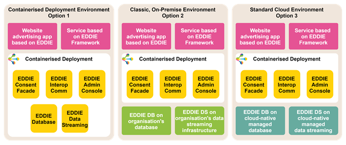

Deployment View
Content
The deployment view describes:
-
technical infrastructure used to execute your system, with infrastructure elements like geographical locations, environments, computers, processors, channels and net topologies as well as other infrastructure elements and
-
mapping of (software) building blocks to that infrastructure elements.
Often systems are executed in different environments, e.g. development environment, test environment, production environment. In such cases you should document all relevant environments.
Especially document a deployment view if your software is executed as distributed system with more than one computer, processor, server or container or when you design and construct your own hardware processors and chips.
From a software perspective it is sufficient to capture only those elements of an infrastructure that are needed to show a deployment of your building blocks. Hardware architects can go beyond that and describe an infrastructure to any level of detail they need to capture.
Motivation
Software does not run without hardware. This underlying infrastructure can and will influence a system and/or some cross-cutting concepts. Therefore, there is a need to know the infrastructure.
Maybe a highest level deployment diagram is already contained in section 3.2. as technical context with your own infrastructure as ONE black box. In this section one can zoom into this black box using additional deployment diagrams:
-
UML offers deployment diagrams to express that view. Use it, probably with nested diagrams, when your infrastructure is more complex.
-
When your (hardware) stakeholders prefer other kinds of diagrams rather than a deployment diagram, let them use any kind that is able to show nodes and channels of the infrastructure.
See Deployment View in the arc42 documentation.
Infrastructure Level 1
Describe (usually in a combination of diagrams, tables, and text):
-
distribution of a system to multiple locations, environments, computers, processors, .., as well as physical connections between them
-
important justifications or motivations for this deployment structure
-
quality and/or performance features of this infrastructure
-
mapping of software artifacts to elements of this infrastructure
For multiple environments or alternative deployments please copy and adapt this section of arc42 for all relevant environments.
<Overview Diagram>
Motivation
: <explanation in text form>
Quality and/or Performance Features
: <explanation in text form>
Mapping of Building Blocks to Infrastructure
: <description of the mapping>

Infrastructure Level 2
Here you can include the internal structure of (some) infrastructure elements from level 1.
Please copy the structure from level 1 for each selected element.
<Infrastructure Element 1>
<diagram + explanation>
<Infrastructure Element 2>
<diagram + explanation>
...
<Infrastructure Element n>
<diagram + explanation>